GUI
TNFSH Python教材
Table of Contents

1. Streamlit
完整的 Streamlit 教學請見 Streamlit 專章，本節為簡要版。
Streamlit 是一個開源的 Python 函式庫，專為資料科學家、機器學習工程師和開發者設計，能夠快速構建美觀且功能強大的網頁應用程式。它最大的優勢在於不需要複雜的前端開發技術，只需用簡單的 Python 程式碼即可生成互動式的網頁應用。Streamlit 常被用於展示資料分析結果、機器學習模型或互動式儀表板。
1.1. 特點：
- 簡單易用：只需要使用 Python 程式碼，無需學習 HTML、CSS 或 JavaScript 等前端技術。
- 快速開發：使用者可以在幾分鐘內從資料分析轉變成一個全功能的網頁應用，適合快速開發與迭代。
- 即時互動：使用者可以透過滑桿、下拉選單等元件與資料互動，即時更新視覺化結果。
- 即時更新：任何對程式碼的變更在存檔後會自動重新整理網頁，讓使用者快速查看變化。
1.2. 適用場景：
- 資料展示與視覺化：簡單地展示資料分析結果，透過圖表和文字解說進行報告。
- 機器學習應用展示：使用 Streamlit 可以輕鬆將機器學習模型包裝成一個可操作的網頁工具，讓非技術人員也能進行模型預測。
- 互動式儀表板：創建類似於 BI（商業智慧）的儀表板，用於動態資料的展示與控制。
1.3. 開發環境設定（本機）
建議在自己的電腦上開發 Streamlit 應用，這是最簡單、最穩定的方式。
1.3.1. 1. 安裝套件
在 PyCharm 或 VS Code 的終端機輸入：
1: pip3 install streamlit
1.3.2. 2. 建立程式檔案
新增一個 Python 檔案，檔名先叫 =main.py=，輸入下列程式並存檔：
1: import streamlit as st 2: 3: st.title('測試python的web玩具')
1.3.3. 3. 執行
在終端機輸入以下指令，瀏覽器會自動開啟：
1: streamlit run main.py
程式修改後存檔，網頁會自動重新載入，不需要重新執行指令。
1.3.4. 結果
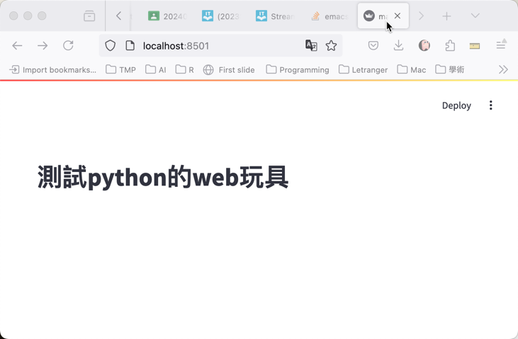
Figure 1: Streamlit 執行畫面
1.4. 替代方案：在 Google Colab 中執行 Streamlit
如果你的電腦無法安裝 Python 環境，可以用 Google Colab 來開發 Streamlit 應用。但由於 Colab 不支援直接開啟網頁服務，需要透過 localtunnel 將應用暴露到網路上，步驟較繁瑣，建議*優先使用本機開發*。
1.4.1. Step 1：安裝套件
1: !pip install streamlit -q
1.4.2. Step 2：撰寫程式
使用 %%writefile 將程式碼寫入檔案：
這裡用到了 st.number_input() 來讓使用者輸入數字：
st.number_input(label, min_value=None, max_value=None, value=None, step=None)
| 參數 | 說明 |
|---|---|
label |
顯示在輸入框上方的文字 |
min_value |
最小值限制（預設 None 不限制） |
max_value |
最大值限制（預設 None 不限制） |
value |
預設值（未指定時預設為 min_value ，若也沒設 min_value 則為 0.0） |
step |
每次增減的步長（未指定時整數預設 1、浮點數預設 0.01） |
另外， value 的型別會決定回傳型別：給 int 就回傳 int，給 float 就回傳 float。
1: %%writefile app.py 2: import streamlit as st 3: st.write('# Streamlit計算機') 4: num1 = st.number_input('數字1') 5: num2 = st.number_input('數字2') 6: num3 = num1 + num2 7: st.write('# 答案', num3)
1.4.3. Step 3：執行並取得公開網址
1: !streamlit run app.py & npx localtunnel --port 8501
執行後會產生一個 xxx.loca.lt 的網址，點擊即可開啟你的應用。
注意：開啟網址後 localtunnel 會先出現一個確認頁面，要求輸入 tunnel password，這個密碼就是 Colab 主機的對外 IP。可以在 Colab 另開一個儲存格執行以下指令取得：
1: !wget -q -O - ipv4.icanhazip.com
把顯示的 IP 貼到密碼欄位送出，就能看到你的 Streamlit 應用。
原理說明：
&讓streamlit run在背景執行，不阻擋後面的指令npx localtunnel --port 8501把 Colab 內部的 8501 port 暴露到網路上，產生一個臨時的公開網址- 這個網址是暫時的，Colab 斷線後就會失效
1.5. 秀資料
學生成績
1: import streamlit as st 2: import pandas as pd 3: 4: st.title('學生成績') 5: 6: df = pd.DataFrame({ 7: '國文': [98, 76, 100, 38, 40], 8: '數學': [80, 46, 80, 67, 66] 9: }) 10: df 11: 12: # 畫圖 13: st.line_chart(df)
1.6. 文字輸入與核取方塊
st.text_input 用來接收使用者輸入的文字，=st.checkbox= 則是一個簡單的開關：
1: import streamlit as st 2: import pandas as pd 3: 4: st.title('學生成績查詢') 5: 6: df = pd.DataFrame({ 7: '姓名': ['小明', '小華', '小美', '小強', '小玉'], 8: '國文': [98, 76, 100, 38, 40], 9: '數學': [80, 46, 80, 67, 66] 10: }) 11: 12: # 文字輸入：搜尋學生 13: name = st.text_input('輸入學生姓名') 14: if name: 15: result = df[df['姓名'].str.contains(name)] 16: st.dataframe(result) 17: 18: # 核取方塊：顯示/隱藏原始資料 19: if st.checkbox('顯示全部資料'): 20: st.dataframe(df)
1.7. 在 Streamlit 中使用 Matplotlib
前面學過的 matplotlib 圖表，可以用 st.pyplot(fig) 直接放進 Streamlit。重點是要先建立 fig 物件，再丟給 =st.pyplot()=：
1: import streamlit as st 2: import pandas as pd 3: import matplotlib.pyplot as plt 4: 5: plt.rcParams['font.sans-serif'] = ['Arial Unicode MS'] 6: plt.rcParams['axes.unicode_minus'] = False 7: 8: st.title('成績分佈') 9: 10: df = pd.DataFrame({ 11: '國文': [98, 76, 100, 38, 40, 85, 72, 91], 12: '數學': [80, 46, 80, 67, 66, 55, 88, 73] 13: }) 14: 15: # 用 matplotlib 畫圖，再用 st.pyplot() 顯示 16: fig, ax = plt.subplots() 17: ax.hist(df['國文'], bins=range(0, 101, 10), rwidth=0.8) 18: ax.set_xlabel('分數') 19: ax.set_ylabel('人數') 20: ax.set_title('國文成績分佈') 21: st.pyplot(fig)
1.8. 上傳檔案
st.file_uploader 讓使用者上傳 CSV 檔案，搭配 pandas 就能做出「上傳資料→分析→視覺化」的完整流程：
1: import streamlit as st 2: import pandas as pd 3: 4: st.title('CSV 資料分析器') 5: 6: uploaded_file = st.file_uploader("上傳 CSV 檔案", type="csv") 7: 8: if uploaded_file is not None: 9: df = pd.read_csv(uploaded_file) 10: st.write(f'共 {len(df)} 筆資料，{len(df.columns)} 個欄位') 11: st.dataframe(df) 12: 13: # 讓使用者選擇要看哪個欄位的統計 14: numeric_cols = df.select_dtypes(include='number').columns.tolist() 15: if numeric_cols: 16: col = st.selectbox('選擇欄位查看統計', numeric_cols) 17: st.write(df[col].describe()) 18: else: 19: st.info('請上傳一個 CSV 檔案')
1.9. 版面配置
預設的 Streamlit 畫面是由上到下一條直線排列。用 st.columns 可以做出左右並排的版面，用 st.tabs 可以做出分頁效果：
1.9.1. 左右並排 (columns)
1: import streamlit as st 2: import pandas as pd 3: 4: st.title('版面示範') 5: 6: df = pd.DataFrame({ 7: '國文': [98, 76, 100, 38, 40], 8: '數學': [80, 46, 80, 67, 66] 9: }) 10: 11: # 建立兩個欄位，左右並排 12: col1, col2 = st.columns(2) 13: 14: with col1: 15: st.subheader('國文成績') 16: st.dataframe(df[['國文']]) 17: 18: with col2: 19: st.subheader('數學成績') 20: st.dataframe(df[['數學']])
1.9.2. 分頁 (tabs)
1: import streamlit as st 2: import pandas as pd 3: import matplotlib.pyplot as plt 4: 5: plt.rcParams['font.sans-serif'] = ['Arial Unicode MS'] 6: plt.rcParams['axes.unicode_minus'] = False 7: 8: st.title('成績系統') 9: 10: df = pd.DataFrame({ 11: '國文': [98, 76, 100, 38, 40], 12: '數學': [80, 46, 80, 67, 66] 13: }) 14: 15: tab1, tab2, tab3 = st.tabs(["原始資料", "統計摘要", "圖表"]) 16: 17: with tab1: 18: st.dataframe(df) 19: 20: with tab2: 21: st.write(df.describe()) 22: 23: with tab3: 24: fig, ax = plt.subplots() 25: df.plot(kind='box', ax=ax) 26: ax.set_title('各科成績箱形圖') 27: st.pyplot(fig)
1.10. 顯示圖片
st.image 可以顯示本機圖片或網路圖片：
1: import streamlit as st 2: 3: # 顯示網路圖片 4: st.image("https://www.python.org/static/img/python-logo.png", 5: caption="Python Logo", width=300)
1.11. 常用元件速查表
以下整理 Streamlit 常用元件，方便做專題時快速查找：
| 元件 | 用途 | 範例 |
|---|---|---|
st.title |
大標題 | st.title('我的應用') |
st.write |
萬用輸出 | st.write(df), st.write('文字') |
st.dataframe |
互動式表格 | st.dataframe(df) |
st.text_input |
文字輸入 | name = st.text_input('姓名') |
st.number_input |
數字輸入 | n = st.number_input('數量') |
st.selectbox |
下拉選單 | opt = st.selectbox('選擇', ['A','B']) |
st.checkbox |
核取方塊 | if st.checkbox('顯示'): |
st.slider |
滑桿 | val = st.slider('值', 0, 100, 50) |
st.radio |
單選按鈕 | r = st.radio('選擇', ['甲','乙']) |
st.file_uploader |
上傳檔案 | f = st.file_uploader('上傳', type'csv')= |
st.image |
顯示圖片 | st.image('photo.png') |
st.pyplot |
顯示 matplotlib | st.pyplot(fig) |
st.line_chart |
快速折線圖 | st.line_chart(df) |
st.bar_chart |
快速長條圖 | st.bar_chart(df) |
st.map |
地圖 | st.map(df) |
st.sidebar |
側邊欄 | st.sidebar.write('Hi') |
st.columns |
左右並排 | c1, c2 = st.columns(2) |
st.tabs |
分頁 | t1, t2 = st.tabs(['頁1','頁2']) |
st.camera_input |
拍照 | img = st.camera_input('拍照') |
1.12. 側邊欄 (Sidebar)
1.12.1. 測試一下
1: import streamlit as st 2: import pandas as pd 3: 4: st.title('學生成績') 5: st.write('lalala') 6: # 數據 7: df = pd.DataFrame({ 8: '國文': [98, 76, 100, 38, 40], 9: '數學': [80, 46, 80, 67, 66] 10: }) 11: 12: st.sidebar.write('選項1') 13: st.sidebar.markdown('選項2') 14: with st.sidebar: 15: st.write('選項3') 16: 17: df
1.12.2. 練習
- 請自行在sidebar和main area裡加入一些文字
- 可以發現sidebar是可以接受markdown語法的，那麼，你能否應用markdown語法在sidebar裡放一個google的連結呢?
1.13. 選單
1.13.1. 連結式選單
1: import streamlit as st 2: import pandas as pd 3: 4: st.title('學生成績') 5: 6: # 數據 7: df = pd.DataFrame({ 8: '國文': [98, 76, 100, 38, 40], 9: '數學': [80, 46, 80, 67, 66] 10: }) 11: 12: # 側邊欄連結 13: st.sidebar.markdown("[查看數據](?page=table)") 14: st.sidebar.markdown("[畫圖](?page=chart)") 15: 16: # 獲取當前URL參數 17: query_params = st.query_params 18: page = query_params.get("page", "table") 19: 20: # 根據URL參數顯示相應的內容 21: if page == 'table': 22: st.write('學生成績數據表') 23: st.dataframe(df) 24: elif page == 'chart': 25: st.write('學生成績折線圖') 26: st.line_chart(df)
1.13.2. 下拉式選單
1: import streamlit as st 2: import pandas as pd 3: import matplotlib.pyplot as plt 4: 5: st.title('學生成績') 6: 7: # 數據 8: df = pd.DataFrame({ 9: '國文': [98, 76, 100, 38, 40], 10: '數學': [80, 46, 80, 67, 66] 11: }) 12: 13: # 側邊欄選擇 14: st.sidebar.write('選單') 15: option = st.sidebar.selectbox( 16: '請選擇操作', 17: ['查看成績', '畫折線圖'] 18: ) 19: 20: # 根據選擇顯示相應的內容 21: if option == '查看成績': 22: st.write('學生成績表') 23: st.dataframe(df) 24: elif option == '畫折線圖': 25: st.write('學生成績折線圖') 26: fig, ax = plt.subplots() 27: ax.plot(df['國文']) 28: ax.plot(df['數學']) 29: ax.set_xticks(range(5)) 30: ax.set_xticklabels(range(1, len(df) + 1)) 31: st.pyplot(fig)
1.13.3. 課堂練習
請參考Google Classroom中的[實作練習7]更專業的資料處理工具: Pandas，新增三種選單功能
- 查看全班成績
- 國文科成績長條圖
- 各科Box圖
- 請解決畫圖時中文出現亂碼的問題
- 請善用ChatGPT
完成結果參考下圖:
.gif)
1.14. 地圖
1.14.1. 單一地標
1: import streamlit as st 2: import pandas as pd 3: 4: st.title('雲林智慧教育中心') 5: 6: data = pd.DataFrame({ 7: 'lat': 23.67, 8: 'lon': 120.39, 9: 'name': ['雲林智慧教育中心'] 10: }) 11: 12: st.map(data)
1.14.2. 兩個或以上地標
1: import streamlit as st 2: import pandas as pd 3: 4: st.title('雲林') 5: # 定義不同地點的數據 6: locs = { 7: '雲林智慧教育中心': {'lat': 23.67, 'lon': 120.39}, 8: '雲林高鐵站': {'lat': 23.738, 'lon': 120.428} 9: } 10: 11: data = pd.DataFrame([ 12: {'lat': locs['雲林智慧教育中心']['lat'], 'lon': locs['雲林智慧教育中心']['lon'], 'name': '雲林智慧教育中心'}, 13: {'lat': locs['雲林高鐵站']['lat'], 'lon': locs['雲林高鐵站']['lon'], 'name': '雲林高鐵站'} 14: ]) 15: 16: st.map(data) 17:
1.14.3. 加入選單
1: import streamlit as st 2: import pandas as pd 3: 4: st.title('雲林智慧教育中心') 5: # 定義不同地點的數據 6: locations = { 7: '雲林智慧教育中心': {'lat': 23.67, 'lon': 120.39}, 8: '雲林高鐵站': {'lat': 23.738, 'lon': 120.428} 9: } 10: 11: # 在側邊欄中選擇地點 12: st.sidebar.write('選單') 13: option = st.sidebar.selectbox( 14: '請選擇地點', 15: ['雲林智慧教育中心', '雲林高鐵站']) 16: 17: # 根據選擇的地點更新地圖數據 18: selected_location = locations[option] 19: data = pd.DataFrame({ 20: 'lat': [selected_location['lat']], 21: 'lon': [selected_location['lon']], 22: 'name': [option] 23: }) 24: selected_location['lat'] 25: selected_location['lon'] 26: option 27: 28: st.map(data)
1.14.4. 課堂練習
- 請加入你家的地圖
- 請加入和你學校的地圖
1.15. 照相
1: import streamlit as st 2: 3: # 取得由相機輸入的影像緩衝資料 4: imgBuffer = st.camera_input("拍照") 5: 6: if imgBuffer is not None: 7: # 將緩衝資料轉換為二進位資料 8: imgData = imgBuffer.getvalue() 9: 10: # 儲存到目前資料夾（請依需求修改路徑） 11: with open("captured_image.png", "wb") as f: 12: f.write(imgData) 13: 14: st.success("影像成功儲存!")
1.16. 部署應用程式 (Deploy your app)
做完專題後，你可以把 Streamlit 應用發佈到網路上，讓老師和同學都能直接用瀏覽器打開你的作品。這是交作業和展示成果的最佳方式。
1.16.1. Step 1：準備檔案
你的專案資料夾至少需要兩個檔案：
my-project/ ├── app.py ← 你的 Streamlit 主程式 └── requirements.txt ← 列出所需套件
requirements.txt 的內容就是你的程式有 import 的套件名稱，例如：
1: streamlit 2: pandas 3: matplotlib
如果你的程式有用到 CSV 資料檔，也一起放進資料夾。
1.16.2. Step 2：上傳至 GitHub
- 登入 GitHub（沒有帳號的先註冊一個）
- 點右上角「+」→「New repository」，取個名字（例如 =my-streamlit-app=）
- 把
app.py和requirements.txt上傳到這個 repository
1.16.3. Step 3：部署到 Streamlit Community Cloud
- 前往 Streamlit Community Cloud，用 GitHub 帳號登入
- 點選「New app」
- 選擇你的 repository、branch（通常是 =main=）、主程式檔案（=app.py=）
- 點選「Deploy」，等待約 1-2 分鐘
- 部署完成後會取得一個公開網址（例如 =https://你的名字-app.streamlit.app=），任何人都能打開
1.16.4. 注意事項
- Streamlit Community Cloud 是免費的，但每個帳號有數量限制
- 如果程式有修改，push 到 GitHub 後會自動重新部署
- 資料檔案不要太大（建議 < 50MB），大檔案改用網路 URL 讀取
1.17. 研習用範例
1.17.1. 需要先在本機端安裝的套件
1: pip3 install pandas 2: pip3 install streamlit 3: pip3 install plotly 4: pip3 install scikit-learn
1.17.2. 範例程式
1: import pandas as pd 2: import streamlit as st 3: import plotly.express as px 4: from sklearn.cluster import KMeans 5: 6: # 讀取資料 7: test = pd.read_csv("https://letranger.github.io/working/scores.csv") 8: 9: # Streamlit 應用程式標題 10: st.title("分數分佈") 11: 12: # 設定側邊欄選單 13: st.sidebar.write('選單') 14: 15: # 科目選擇下拉選單 16: option = st.sidebar.selectbox( 17: '請選擇科目', 18: ['國文', '英文', '數學', '物理'] 19: ) 20: 21: # 顯示資料框 22: st.write("### 資料", test) 23: 24: # 將分數依每10分分一組 25: test['binned'] = pd.cut(test[option], bins=range(0, 101, 10)) 26: 27: # 計算每個區間的頻率 28: frequency = test['binned'].value_counts().sort_index() 29: # 轉換為資料框格式，方便 Streamlit 顯示 30: frequency_df = pd.DataFrame({'分數區間': frequency.index.astype(str), '頻率': frequency.values}) 31: 32: # 使用 Streamlit 顯示長條圖 33: st.bar_chart(frequency_df.set_index('分數區間')) 34: 35: # KMeans 聚類 36: # 使用滑桿選擇 k 值（聚類數量） 37: k = st.slider("選擇聚類的數量 k", 2, 10, 3) 38: kmeans = KMeans(n_clusters=k) # 預設分為 k 群 39: kmeans.fit(test[['國文', '英文']]) # 使用 '國文' 和 '英文' 進行聚類 40: clusters = kmeans.predict(test[['國文', '英文']]) 41: 42: # 將聚類結果添加到資料框 43: test['聚類'] = clusters 44: 45: # 使用 Plotly 繪製聚類結果的散點圖 46: fig2 = px.scatter(test, x='國文', y='英文', color='聚類', title='國文與英文分數的聚類結果') 47: st.plotly_chart(fig2)
2. Gradio
前面學了 Streamlit，這裡再介紹另一個 Web GUI 工具 Gradio。兩者的差異：
| 工具 | 適合場景 |
|---|---|
| Streamlit | 資料儀表板、多頁面的資料展示應用 |
| Gradio | 「輸入→處理→輸出」的 demo，特別適合 AI 模型展示 |
簡單來說，如果你的程式是「丟東西進去、吐結果出來」的型態，Gradio 會比 Streamlit 更快上手。
2.1. 安裝套件
1: pip3 install gradio
2.2. Hello world1
gr.Interface 是 Gradio 最核心的類別，把一個 Python 函式包裝成網頁介面：
gr.Interface(fn, inputs, outputs, title=None, description=None)
| 參數 | 說明 |
|---|---|
fn |
被 UI 裝飾的函式 |
inputs |
輸入元件，可用字串簡寫如 "text", "image", "audio" |
outputs |
輸出元件，可用字串簡寫如 "text", "image", "label" |
title |
網頁標題（顯示在最上方） |
description |
標題下方的說明文字 |
多個輸入/輸出用 list 傳入，例如 inputs["text", "number"]=。Gradio 支援 20 多種不同的元件型別，其中大部分都可以作為輸入/輸出元件，詳見官網文件gradio Docs
1: import gradio as gr 2: 3: def greet(name): 4: return "Hello " + name + "!!" 5: 6: demo = gr.Interface(fn=greet, inputs="text", outputs="text") 7: 8: demo.launch()
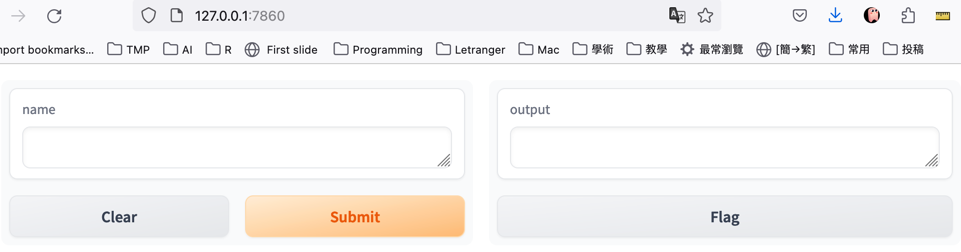
Figure 3: 執行畫面
2.3. 數字 I/O
這裡用 gr.Slider 當作數字輸入元件，比起手動打數字方便多了：
gr.Slider(minimum=0, maximum=100, value=50, step=1, label=None)
| 參數 | 說明 |
|---|---|
minimum |
滑桿最小值（預設 0） |
maximum |
滑桿最大值（預設 100） |
value |
預設值（預設 50） |
step |
每次滑動的步長（預設 1） |
label |
顯示在滑桿上方的標籤文字 |
1: import gradio as gr 2: 3: def BMI(h, w): 4: h /= 100 5: return f'BMI值: {w/(h*h)}' 6: 7: ui = gr.Interface( 8: fn=BMI, inputs=[gr.Slider(100, 240, label="身高(cm)"), gr.Slider(40, 200, label="體重(kg)")], 9: outputs=["text"] 10: ) 11: ui.launch(share=True)
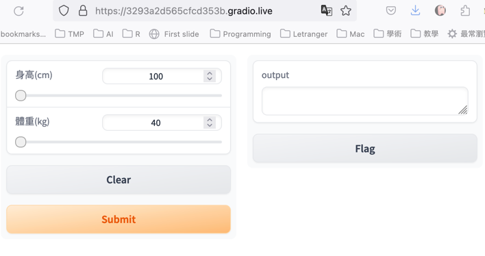
Figure 4: 執行畫面
2.3.1. [課堂練習]三角形面積 TNFSH
輸入三角形三邊長(1..100)，輸出面積、周長
2.4. 文字 I/O
1: import gradio as gr 2: 3: def greet(name): 4: return "Hello " + name + "!" 5: 6: demo = gr.Interface( 7: fn=greet, 8: inputs=gr.Textbox(lines=2, placeholder="Name Here..."), 9: outputs="text", 10: ) 11: demo.launch(share=True)
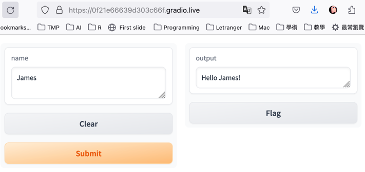
Figure 5: 執行畫面
2.5. 多資料 I/O
1: import gradio as gr 2: 3: def greet(name, is_morning, temperature): 4: salutation = "Good morning" if is_morning else "Good evening" 5: greeting = f"{salutation} {name}. It is {temperature} degrees today" 6: celsius = (temperature - 32) * 5 / 9 7: return greeting, round(celsius, 2) 8: 9: demo = gr.Interface( 10: fn=greet, 11: inputs=["text", "checkbox", gr.Slider(0, 100)], 12: outputs=["text", "number"], 13: ) 14: demo.launch(share=True)
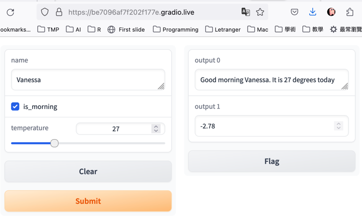
Figure 6: 執行畫面
2.6. 圖形 I/O
1: import gradio as gr 2: import matplotlib.pyplot as plt 3: import numpy as np 4: def curve(a, b, c): 5: x = np.arange(-3, 3, 0.3) 6: y = a*x**2 + b*x + c 7: fig = plt.figure() 8: plt.plot(x, y) 9: print(x) 10: print(y) 11: return fig 12: inputs = [gr.Slider(0, 10, 5), gr.Slider(0, 10, 5), gr.Slider(0, 10, 5)] 13: outputs = gr.Plot() 14: demo = gr.Interface( 15: fn=curve, 16: inputs=inputs, 17: outputs=outputs, 18: cache_examples=True,) 19: demo.launch(share=True)
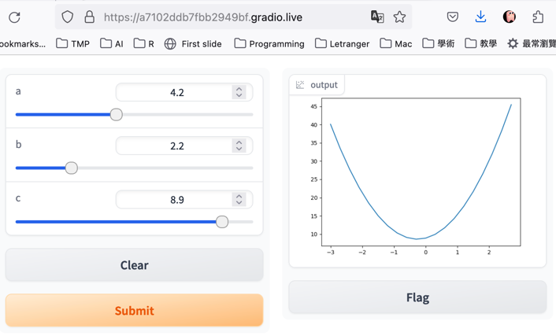
Figure 7: 執行畫面
2.7. 按鈕 (Button)
前面的 gr.Interface 適合「一進一出」的簡單情境，如果需要自訂版面配置（例如自己決定元件排列方式），就要用 =gr.Blocks=：
with gr.Blocks() as demo:
- 在
with區塊裡面放元件，就會按順序排列 - 搭配
gr.Row(),gr.Column()可以做水平/垂直排列 - 用
btn.click(fn=函式, inputs…, outputs=…)= 綁定按鈕事件
1: import gradio as gr 2: 3: def greet(name): 4: return "Hello " + name + "!" 5: 6: with gr.Blocks() as demo: 7: name = gr.Textbox(label="Name") 8: output = gr.Textbox(label="Output Box") 9: greet_btn = gr.Button("Greet") 10: greet_btn.click(fn=greet, inputs=name, outputs=output) 11: 12: demo.launch(share=True)
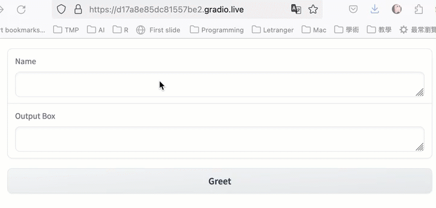
Figure 8: 執行畫面
2.8. Radio
1: import gradio as gr 2: 3: def greet(gender, name): 4: if gender == "Male": 5: return "Hello, Mr. " + name + "!" 6: else: 7: return "Hello, Ms. " + name + "!" 8: 9: with gr.Blocks() as demo: 10: inputs = [gr.Radio(["Male", "Female"]), gr.Textbox(label="Name")] 11: output = gr.Textbox(label="Output Box") 12: greet_btn = gr.Button("Greet") 13: greet_btn.click(fn=greet, inputs=inputs, outputs=output) 14: 15: demo.launch(share=True)
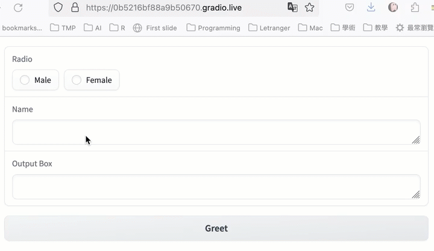
Figure 9: 執行畫面
2.9. Tab(分頁)
適合多功能的程式(靜態的多重輸入)
1: import gradio as gr 2: 3: def tri(a, b, c): 4: import math 5: # 防呆：三角形任兩邊之和必須大於第三邊 6: if a + b <= c or a + c <= b or b + c <= a: 7: return "三邊長無法構成三角形，請重新調整" 8: # 使用海龍公式計算半周長 9: s = (a + b + c) / 2 10: # 使用半周長計算面積 11: area = math.sqrt(s * (s - a) * (s - b) * (s - c)) 12: return round(area,2) 13: 14: def rect(a, b): 15: return round(a*b,2) 16: 17: area1 = gr.Interface( 18: tri, 19: [gr.Slider(label="邊長 a", minimum=1), gr.Slider(label="邊長 b", minimum=1), gr.Slider(label="邊長 c", minimum=1) ], 20: gr.Textbox(label="面積"), 21: ) 22: 23: area2 = gr.Interface( 24: rect, 25: [ gr.Slider(label="長"), gr.Slider(label="寬") ], 26: gr.Number(label="面積"), 27: ) 28: 29: gr.TabbedInterface( 30: [area1, area2], ["三角形", "長方形"] 31: ).launch()
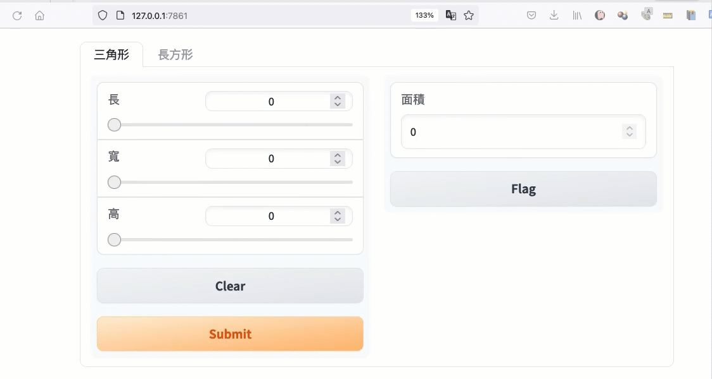
Figure 10: 分頁式的Gradio
3. Flask
3.1. 按鈕 (Button)
Flask 用 @app.route() 裝飾器把 URL 路徑對應到 Python 函式：
@app.route(rule, methods['GET'])=
| 參數 | 說明 |
|---|---|
rule |
URL 路徑，如 "/"=、"/page"= |
methods |
允許的 HTTP 方法，如 ['GET', 'POST'] |
rule 中可用 <variable> 接收 URL 參數，例如 @app.route("/user/<name>") 會把網址中的值傳給函式參數 =name=。
1: from flask import Flask 2: app = Flask(__name__) 3: 4: @app.route("/") 5: def hello(): 6: title = "<title>Advanced Materials of Python</title>" 7: h1 = "<h1>Python based web</h1>" 8: p1 = "<p>這是用Python開發的網站</p>" 9: return title+h1+p1 10: 11: if __name__ == "__main__": 12: app.run()

Figure 11: Flask Web Site
3.2. 輸入表單 (Input form)2
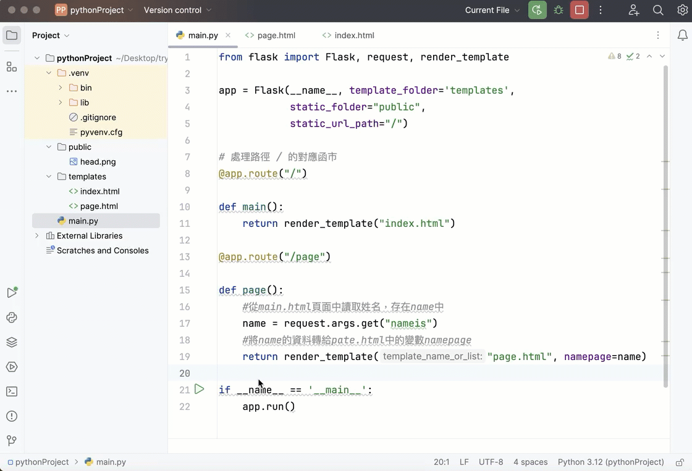
Figure 12: 執行畫面
3.2.1. Python
這個範例用到了 render_template() 來載入 HTML 模板：
render_template(template_name, **context)
| 參數 | 說明 |
|---|---|
template_name |
模板檔名，如 "index.html" |
**context |
要傳給模板的變數，用關鍵字參數傳入 |
注意事項：
- 模板檔案須放在
templates/資料夾裡（Flask 預設路徑） - 傳入的變數可在模板中用 ={{ variable }}= 存取
1: # Flask網站前後端互動 09 - 超連結與圖片 2: # 載入Flask、Request、render_template 3: from flask import Flask, request, render_template 4: 5: app = Flask(__name__, template_folder='templates', 6: static_folder="public", 7: static_url_path="/") 8: 9: # 處理路徑 / 的對應函式 10: @app.route("/") 11: 12: def main(): 13: return render_template("index.html") 14: 15: @app.route("/page") 16: 17: def page(): 18: #從main.html頁面中讀取姓名，存在name中 19: name = request.args.get("nameis") 20: # 將name的資料轉給page.html中的變數namepage 21: return render_template("page.html", namepage=name) 22: # 啟動Server 23: 24: if __name__ == '__main__': 25: app.debug = True # 開發時方便除錯，正式上線時記得關掉 26: app.run()
3.2.2. templates
- 建立public資料夾，放入一個head.png圖檔
- 建立templates資料夾
- 以下兩個html檔要放在templates資料夾中
3.2.2.1. index.html
1: <!DOCTYPE html> 2: <html lang="en"> 3: 4: <head> 5: <meta charset="UTF-8"> 6: <meta http-equiv="X-UA-Compatible" content="IE=edge"> 7: <meta name="viewport" content="width=device-width, initial-scale=1.0"> 8: <title>這是標題</title> 9: </head> 10: 11: <body> 12: <h3>網頁的主畫面</h3> 13: <form action="/page"> 14: 名字:<input type="text" name="nameis"> 15: <button>點擊送出</button> 16: </form> 17: </body> 18: 19: </html>
3.2.2.2. page.html
<!DOCTYPE html>
<html lang="en">
<head>
<meta charset="UTF-8">
<meta http-equiv="X-UA-Compatible" content="IE=edge">
<meta name="viewport" content="width=device-width, initial-scale=1.0">
<title>page1</title>
</head>
<body>
<h1>我的名字叫 {{namepage}}</h1>
</body>
</html>
3.3. [課堂練習]Flask 自我介紹網站 TNFSH
參考上面的 Input form 範例，製作一個簡易的自我介紹網站：
- 首頁（index.html）包含一個表單，讓使用者輸入：
- 姓名（文字輸入）
- 班級（文字輸入）
- 興趣（文字輸入）
- 姓名（文字輸入）
- 點擊送出後，跳到結果頁（result.html），顯示使用者輸入的資料
- 結果頁使用 HTML 標題和段落排版
提示：
- 使用
request.args.get()取得表單資料 - 在
render_template()中傳入多個變數 - HTML 表單的
action屬性指向 Flask 的路由
4. tkinter
4.1. 安裝
4.1.1. MacOS
tkinter 是 Python 的內建模組，不需要（也不能）用 pip install tk 安裝（PyPI 上的 tk 套件與 tkinter 無關）。若在 macOS 上 import tkinter 出現錯誤，通常是 Homebrew 安裝的 Python 沒有附帶 Tk，此時於 PyCharm 的 terminal 下輸入 brew install python-tk@Python版本 即可。例如系統的預設 python 版本為 3.12，則輸入
1: brew install python-tk@3.12
4.2. 範例 #1
tkinter 的 tk.Button 用來建立按鈕，最重要的是 command 參數：
tk.Button(parent, text'…', command=callback)=
| 參數 | 說明 |
|---|---|
parent |
父元件（通常是 root 主視窗） |
text |
按鈕上顯示的文字 |
command |
按下按鈕時要執行的函式（不加括號！） |
command 只能綁定「沒有參數的函式」，如果需要傳參數，用 lambda 包一層：
command=lambda: calculate('+')
1: # -*- coding: utf-8 -*- 2: import tkinter as tk 3: from tkinter import messagebox 4: # 按完button要做什麼 5: def test(): 6: tk.messagebox.showinfo('測試', 'Hi') 7: 8: # main window 9: root = tk.Tk() 10: root.title('my window') 11: root.geometry('200x150') 12: 13: root.configure(background='white') 14: 15: myentry = tk.Entry(root) 16: myentry.pack() 17: 18: # Button 19: myButton = tk.Button(root, text='Button', command=test) 20: myButton.pack() 21: 22: # Label 23: resultLabel = tk.Label(root, text='這是Label') 24: resultLabel.pack() 25: 26: root.mainloop()
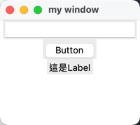
Figure 13: 執行畫面
4.3. 範例 #2
1: # -*- coding: utf-8 -*- 2: import tkinter as tk 3: from tkinter import messagebox 4: 5: def button_event(): 6: #print(var.get()) 7: if var.get() == '': 8: tk.messagebox.showerror('message', '未輸入答案') 9: elif var.get() == '2': 10: tk.messagebox.showinfo('message', '答對了！') 11: else: 12: tk.messagebox.showerror('message', '答錯') 13: 14: root = tk.Tk() 15: root.title('my window') 16: 17: # label 18: mylabel = tk.Label(root, text='1+1=') 19: mylabel.grid(row=0, column=0) 20: 21: var = tk.StringVar() 22: myentry = tk.Entry(root, textvariable=var) 23: myentry.grid(row=0, column=1) 24: 25: mybutton = tk.Button(root, text='完成', command=button_event) 26: mybutton.grid(row=1, column=1) 27: 28: root.mainloop()
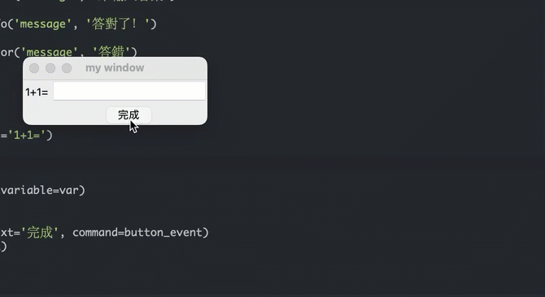
Figure 14: 執行畫面
4.4. [課堂練習]簡易計算機 TNFSH
參考範例 #1 和 #2，用 tkinter 製作一個簡易計算機，需包含：
- 兩個輸入欄位（Entry）讓使用者輸入數字
- 四個按鈕（+、-、×、÷）
- 一個 Label 顯示計算結果
- 使用 grid 排版
提示：
- 用
tk.Entry取得輸入值，透過.get()讀取並用float()轉型 - 用
tk.Button(root, text'+', command=函式名)= 建立按鈕 - 用
resultLabel.config(text=結果)更新 Label 文字
完成畫面參考：
- 第一列：「數字1」Label + Entry
- 第二列：「數字2」Label + Entry
- 第三列：四個運算按鈕（+、-、×、÷）
- 第四列：「結果」Label
5. PyInstaller
5.1. 安裝pyinstaller
1: pip3 install pyinstaller
5.2. 準備要打包的檔案
5.2.1. 找一個喜歡的icon
- https://www.iconarchive.com
- mac: icns
- windows: ico
此處我下載了一個icns，命名為imac.icns，與底下的403qq.py存於同一資料夾裡，如果你懶到不想自己找，也可以按這裡下載我的icns圖示檔
5.2.2. 以前述tkinter demo#2為例，將下列程式命名為403qq.py
1: import tkinter as tk 2: from tkinter import messagebox 3: 4: def button_event(): 5: #print(var.get()) 6: if var.get() == '': 7: tk.messagebox.showerror('message', '未輸入答案') 8: elif var.get() == '2': 9: tk.messagebox.showinfo('message', '答對了！') 10: else: 11: tk.messagebox.showerror('message', '答錯') 12: 13: root = tk.Tk() 14: root.title('my window') 15: 16: # label 17: mylabel = tk.Label(root, text='1+1=') 18: mylabel.grid(row=0, column=0) 19: 20: var = tk.StringVar() 21: myentry = tk.Entry(root, textvariable=var) 22: myentry.grid(row=0, column=1) 23: 24: mybutton = tk.Button(root, text='完成', command=button_event) 25: mybutton.grid(row=1, column=1) 26: 27: root.mainloop()
5.3. 打包
1: pyinstaller --icon imac.icns --noconsole -n 403QQ 403qq.py
成功執行後，會在同一資料夾中看到一個dist的資料夾，裡面有一支403QQ的應用程式，試著執行看看
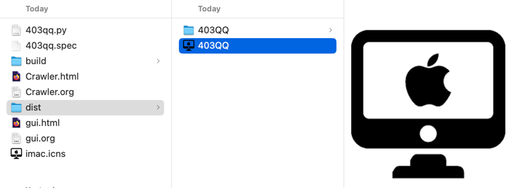
Figure 15: 編譯後的應用程式: 403QQ